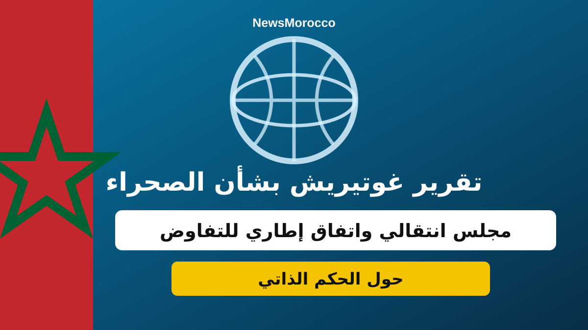

تقرير غوتيريش بشأن الصحراء.. مقترح لإنشاء مجلس انتقالي واتفاق إطاري للتفاوض حول الحكم الذاتي

كشف تقرير الأمين العام للأمم المتحدة أنطونيو غوتيريش بشأن الصحراء، المؤرخ في فاتح أكتوبر 2026 ويحمل الرمز S/2026/781، عن تطورات جديدة في مسار المفاوضات السياسية.
مناقشة إمكانية إنشاء مجلس انتقالي لمرحلة انتقالية محتملة، والعمل على مشروع اتفاق إطاري يمكن أن يشكل أساساً للتفاوض حول نموذج مفصل للحكم الذاتي.
وبحسب المعطيات المتداولة حول التقرير، شهد الربع الأول من سنة 2026 ثلاث جولات من المفاوضات المباشرة بمشاركة المغرب وجبهة البوليساريو والجزائر وموريتانيا، برعاية أممية وبمشاركة الولايات المتحدة.
كما أُثيرت خلال المفاوضات ترتيبات مؤسساتية وأمنية وسياسية مرتبطة بأي مرحلة انتقالية محتملة، إلى جانب مناقشة تفاصيل مقترح الحكم الذاتي المغربي باعتباره أساساً للتفاوض.
ويؤكد التقرير أن المسار لا يزال تفاوضياً، وأن أي تسوية نهائية تتطلب انخراط الأطراف المعنية في مفاوضات بحسن نية والتوصل إلى اتفاق سياسي.
المصدر: تقرير الأمين العام للأمم المتحدة S/2026/781، ومعطيات صحفية منشورة بتاريخ 4 أكتوبر 2026.
← العودة إلى الصفحة الرئيسية